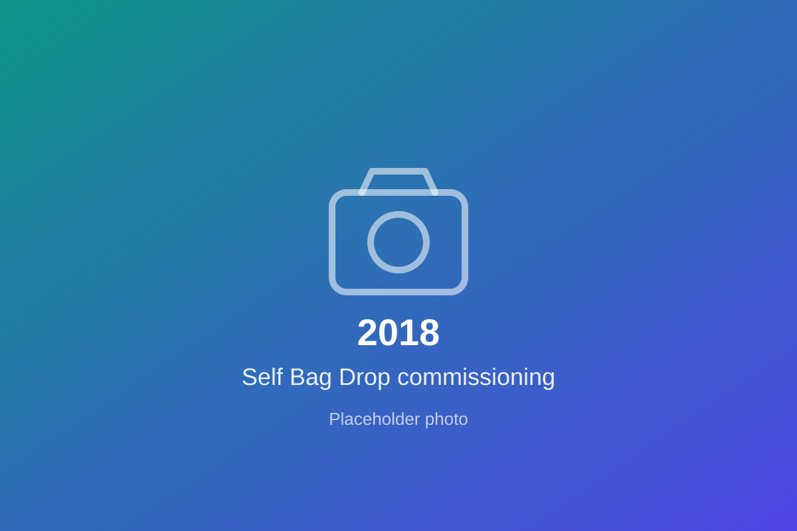
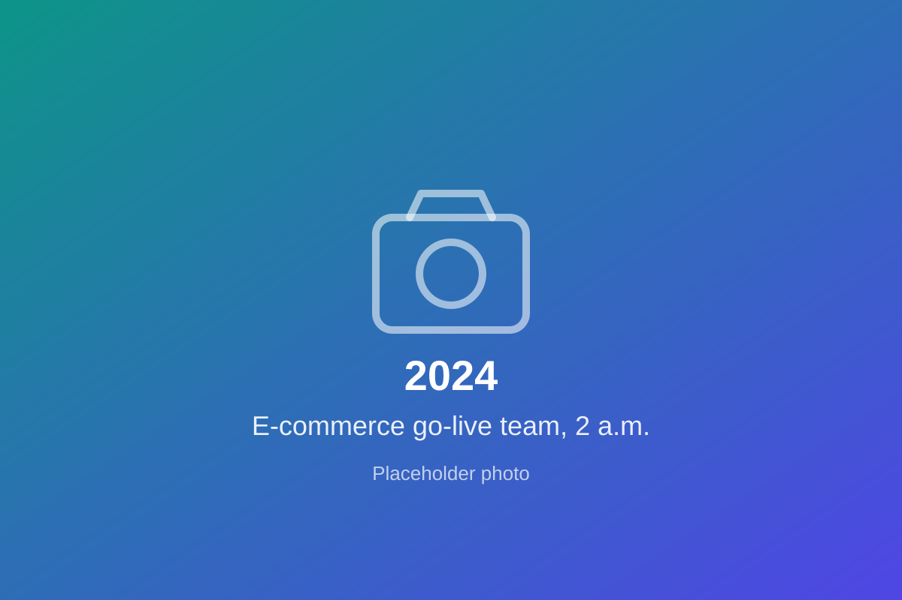
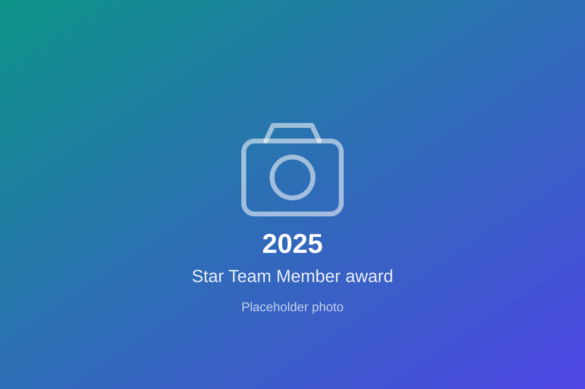

Product & Technology Professional — Platforms, APIs & Customer Experience
Now: Senior DevOps Engineer, Xoriant (Pune) · Before: Business Analyst, TCS (Tokyo)
I led a 10-member team to build an airline booking platform that grew online bookings 20% in year one, and designed APIs for 40+ microservices. Now I run fintech DevOps platforms and am moving into product management.
Ran workshops with 10+ stakeholders and turned them into BRDs, user stories and wireframes.
Ranked features by business value vs delivery effort for the booking and post-booking platform.
35+ sprints, 12 on-time releases, ~80% sprint completion across dev and QA teams.
Reusable REST/SOAP contracts across 40+ microservices drove 20% API reuse.
+20% bookings, ~70% fewer downtime incidents, 60% faster patch cycles.
Led a 10-member team, and a CI/CD migration aligning 5+ teams on one roadmap.
8+ years across airline and fintech technology, from requirements and API design in Tokyo to running DevOps platforms at scale.
Product case studies and concepts that show how I research, prioritise and define products.
Surveyed 31 users and interviewed 2 to understand why working professionals hesitate to order restaurant food. 90% cited hygiene as a concern, and 52% picked reliable hygiene information as the top improvement. Prioritised 7 ideas with RICE and prototyped a Verified Hygiene Score and Hygiene Review Summary, with a key metric, secondary metric and guardrail.
Authored a PRD for an AI assistant that unifies Jira, ServiceNow, Confluence and vendor documentation for platform engineers in regulated financial services, who lose an estimated 3–4 hours a week searching for answers. Specified the RAG architecture, failure modes, evaluation set, success metrics and guardrails such as source citations, access control and no credential exposure.
The product, technical and analytical toolkit I work with.
Where I studied and what I focused on.
Structured programme covering product discovery, roadmapping, metrics, prioritisation and stakeholder management. This portfolio is part of the coursework.
Engineering fundamentals and structured problem-solving that I now apply to software, platforms and product decisions.
From a mechanical engineering graduate to a QA analyst and then business analyst in Tokyo, then into platforms and product, and what I achieved at every stage.



Open to product conversations, hiring discussions and collaborations.